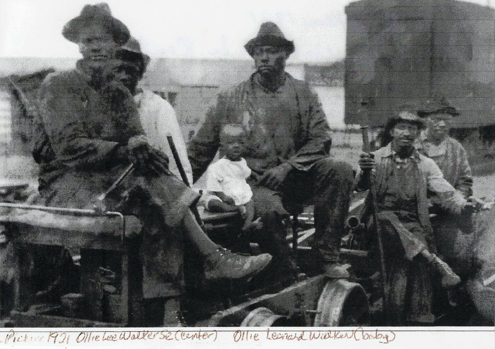
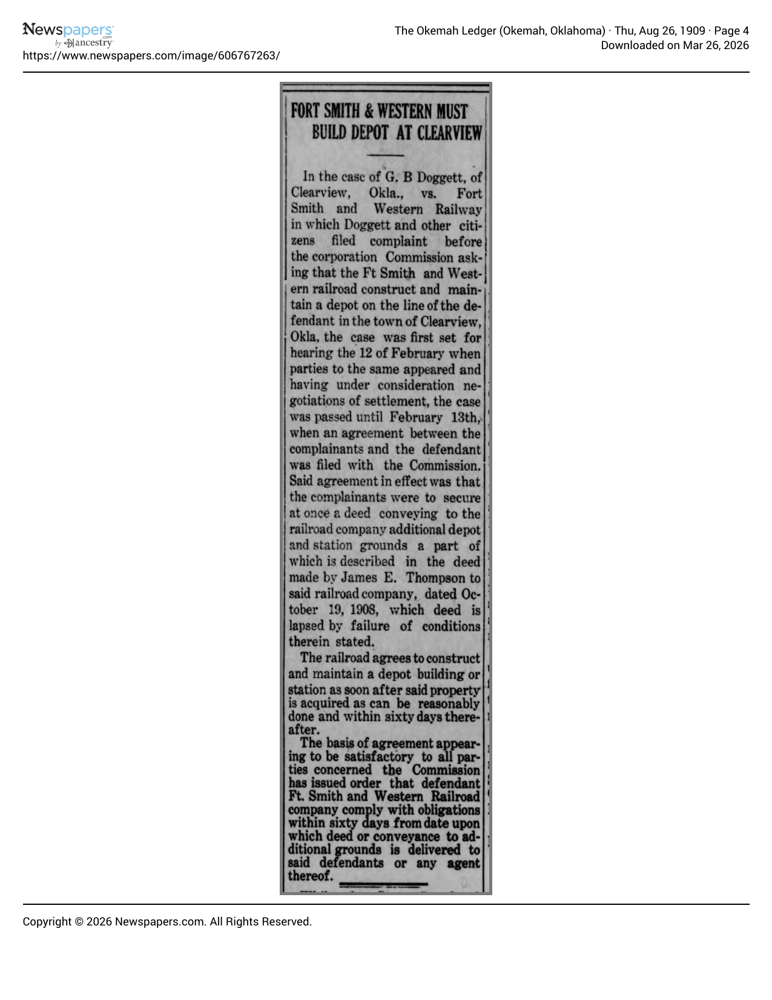
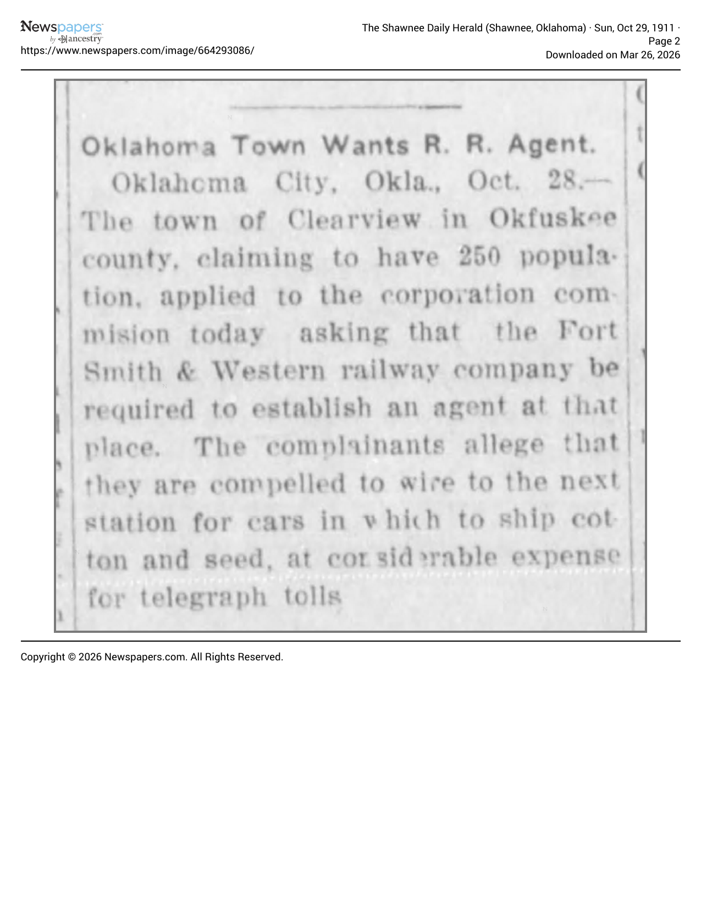
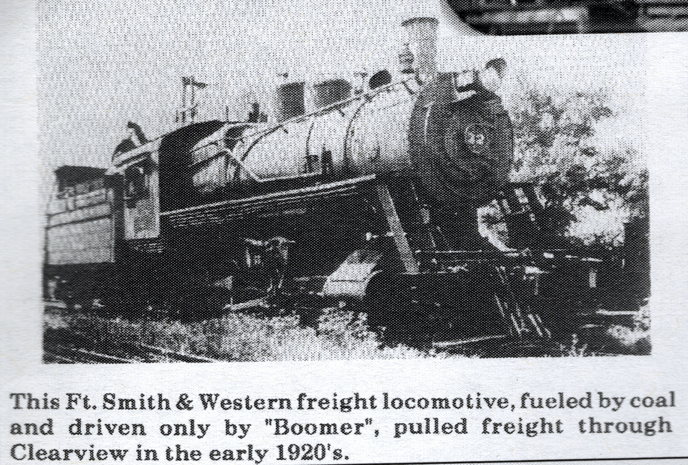
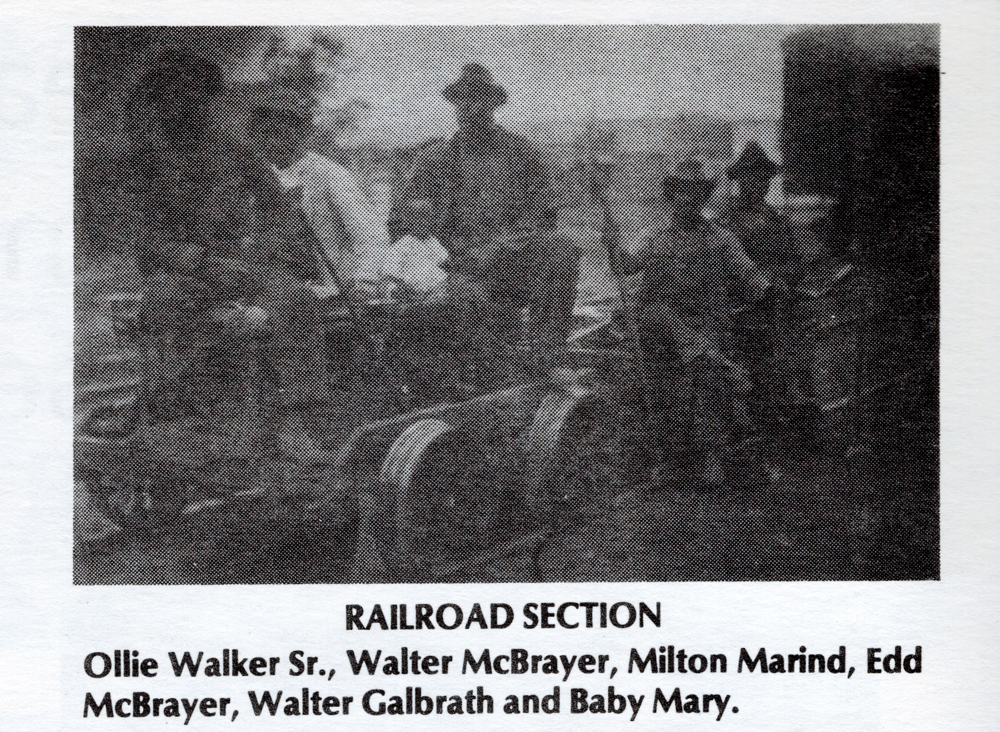
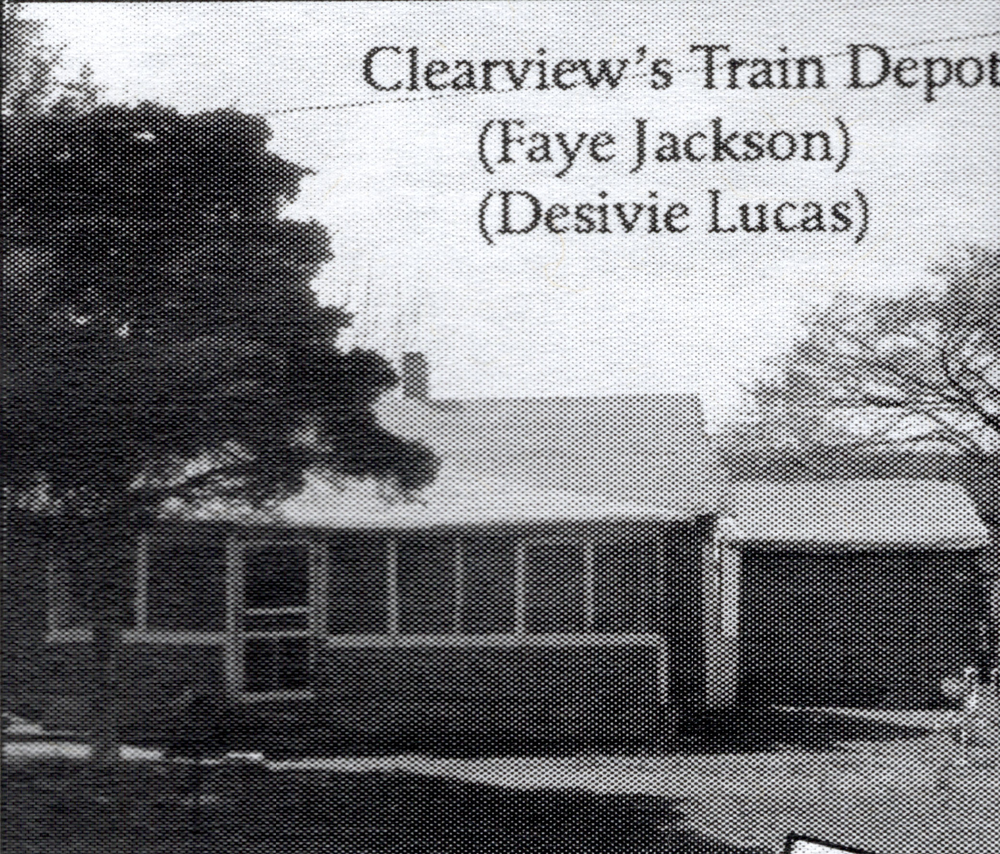

Ft. Smith & Western Railroad Depot
History
The Ft. Smith & Western Railroad Depot served as the primary facility to load and unload passengers and freight in Clearview. Running from Fort Smith to Guthrie, it connected local industries such as the brick factory with larger markets and allowed storeowners to offer a wider range of goods. The railroad employed a Black station agent and ran four passenger trains and as many or more freight trains daily, making it the most accessible way to get in and out of Clearview.
A unique feature of Clearview's railroad depot is that the builders subverted the discrimination of Jim Crow laws at the time by building a larger Black waiting room than the white waiting room. Other stations usually offered a spacious and comfortable waiting room for white passengers while only providing a small bench around the back of the station for Black passengers.
The Clearview depot consisted of a large waiting room for Blacks, a baggage freight room, a platform trolley, a ticket office combined with a small waiting room for whites, along with separate outdoor toilets. This intentional decision to comply with the segregation laws of the period by flipping the discriminatory practices underscores the agency and dignity that all-Black towns like Clearview afforded African Americans in constructing and operating their own facilities in response to the racism experienced in the Jim Crow South. The services of the Ft. Smith and Western Railroad were discontinued in 1939.
A notable event at the depot occurred on August 22, 1914 when Booker T. Washington visited Clearview aboard the Ft. Smith and Western Railroad train by invitation of James E. Thompson. He gave a platform speech to the local schoolchildren and citizens and was entertained by a group of local horsemen called the Rough Riders before traveling on to Boley twenty miles west.






